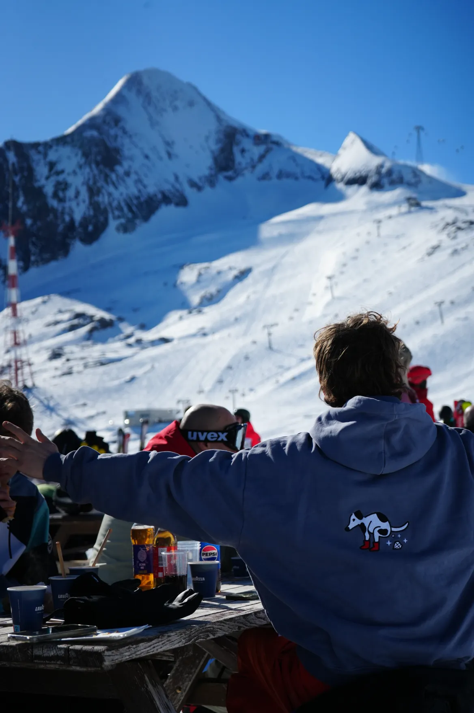

Uitgelichte blog
Evenement fotografie
Een evenement duurt vaak maar een paar uur, maar de herinneringen moeten blijven hangen. In deze blog lees je waarom sterke evenementfotografie zoveel meer doet dan alleen het moment vastleggen.
Lees deze blogOnderstaand mijn blogs over fotografie
Hieronder vind je een selectie van inspirerende blogartikelen, vormgegeven in dezelfde warme stijl als de rest van de website. Klik op een kaart en ontdek meer over evenementen, fotografie en de verhalen achter de beelden. Laat je inspireren en krijg een beter beeld van wat er mogelijk is voor jouw eigen evenement of fotoshoot.
- /blogs/evenementen-fotografie
- /blogs/verjaardag-fotoshoot
Contact
Ben je geinteresseerd? Neem dan contact met mij op, en dan kijken we samen wat ik voor je kan betekenen.